KG-RAG 기반 화장품 추천 시스템
피부 고민을 자연어로 입력하면 근거 있는 성분·제품을 추천하는 GraphRAG + LLM 기반 화장품 추천 서비스. 데이터 파이프라인부터 LLM 서빙, 최적화, 품질 검증까지 End-to-End LLMOps로 구현했습니다.
- 소속
- 빅데이터 연합 동아리 BOAZ 25기 데이터 엔지니어링
- 기간
- 2026.01 – 2026.07 정규 활동
2026.09 – 2026.11 종료 후 운영 개선, 베타 운영 후 종료 - 팀
- Team 4EVR0 (4인)
- 역할
- 데이터 파이프라인 설계 · AWS 인프라 구성 및 운영 · 통합 모니터링 및 알림 구축
규모
주요 기여
- 전처리 파이프라인Iceberg 메달리온 설계, Aho-Corasick 성분 매칭매칭률 99%대, 완전탐색 대비 약 200배
- CI/CDGitHub OIDC 키리스 배포, 배포 결과 회수, 재시작 승인 분리레포 4개, 워크플로 7개 통일
- 통합 모니터링5개 실행 환경의 지표와 로그를 Grafana 하나로대시보드 2종 전담, 알림 14종
- 운영 개선크롤 DQ 오탐 원인 분석, 입력 품질 게이트, 재실행 멱등화, 백필데이터 나이 SLO 96.1%, 누락 배치 7개 복구
- 베타 관측저트래픽 알림 6종 설계 (요청 563건, 사용자 63명)GPU 정지 3회 모두 3분 내 감지, 배포 오탐 0건
성과제24회 BOAZ 빅데이터 컨퍼런스 발표 및 데모 부스 (2026.07.25)
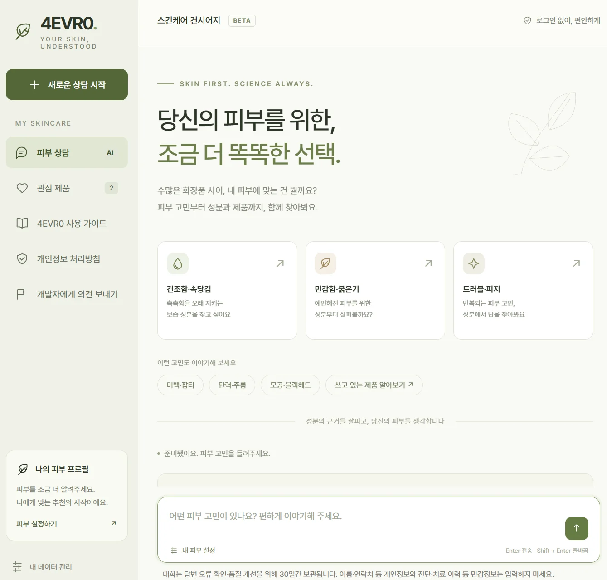
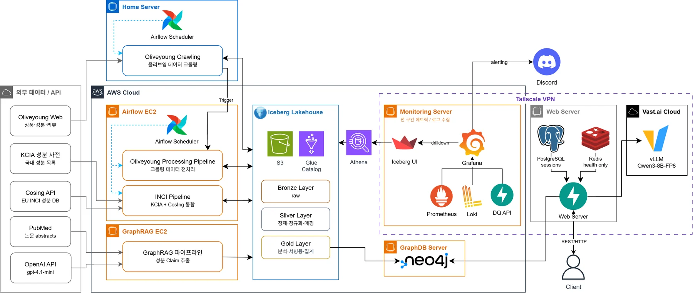
01
데이터 전처리 파이프라인 설계
크롤링한 올리브영 데이터를 정제해 Silver 레이어에 분기 저장하고, Graph RAG 시스템에 공급하는 ETL 파이프라인입니다.
파이프라인 흐름
S3에 레이어별로 적재합니다.
Current: 최신 스냅샷 (overwrite)
History: 시계열 누적 (append)
Error: 거부 레코드·잔여 성분 경고를 사유별로 태깅 보존
Error로 분기되는 경우: 크롤링 데이터 누락, 중복 데이터, 성분 분석이 불가한 데이터, 성분 매칭이 안 된 경우
문제
- 성분 표기가 상품마다 제각각이고, 현행 성분명과 구명칭이 섞여 있다
- 상품 하나에 성분을 귀속시킬 수 없는 경우가 있다 (옵션 선택형, 이종 결합 세트)
처리
- Aho-Corasick으로 성분표에서 사전 어휘를 다중 패턴 탐색
- 성분 현행명과 구명칭을 모두 사전에 두어 표기가 바뀐 성분도 매칭
- 귀속 불가 상품은 분석 대상에서 제외하되, 버리지 않고 사유를 남김
- 운영 개선: 과거 누락 배치 재처리를 위한 별도 Backfill 경로 추가
- 운영 개선: DLQ 자동 재투입 대신 사전 보완. 오류 1,826건 중 82%가 의도된 제외(중복 56%, 번들 26%)이고 3일마다 재수집되므로, 사전만 고치면 다음 배치에서 자동 복구
성분 매칭 정합성 상시 95%+ 유지 (평상 ≈ 99.1%, 95% 미만 시 알람). 실패는 DLQ(Error)로 격리해 파이프라인 무중단
성분 매칭을 Aho-Corasick(사전 2.6만 키)으로 O(n·m) → O(n+m) 개선 → 사전 완전탐색 대비 약 200배대 속도
02
CI/CD: 키리스 인증과 결과를 확인하는 배포
SSM 호출 성공을 배포 성공으로 보지 않도록 결과를 회수하고, 실행 중 태스크를 끊을 수 있는 재시작만 승인을 거치게 했습니다.
구축 배경
DAG 내 스테이지를 독립 컨테이너(DockerOperator)로 끊어 설계 → 코드 변경이 이미지로 반영되어야 실제 실행에 적용되는 구조
- 이미지: 손으로 하면 4개 레포에 이미지 빌드 후 ECR push를 매번 반복해야 한다
- 호스트: DAG 정의와 compose 설정은 Git에 있는데, 서버에 직접 붙어 작업하는 일이 잦아 git pull을 빼먹고 실행 코드와 레포지토리가 어긋나는 일이 반복됐다
CI/CD 파이프라인 구성
- 이미지는 ECR에서, 호스트의 DAG 및 설정은 Git에서 각각 최신을 맞춤
- 역할을 용도별로 나눠 최소 권한 유지
| 워크플로우 | 하는 일 | Assume Role |
|---|---|---|
build-and-push.yml | 이미지 빌드 → ECR push | GitHubActionsECRRole |
deploy.yml (Airflow_Infra) | SSM으로 git pull + 결과 회수, compose 변경 시 승인 후 재시작 | GitHubActionsSSMRole |
deploy.yml (Monitoring_Infra) | 바뀐 설정의 서비스만 재시작 + 헬스체크 3종 | GitHubActionsSSMRole |
키리스 도입
- 레포 secrets에 액세스 키를 두면 유출 시 회수가 어렵고 주기적 교체가 부담
- GitHub OIDC로 받은 단기 토큰으로 IAM Role을 assume → 레포에 AWS 키 없이 배포
배포 결과 확인과 위험도별 반영 (2026.10)
- SSM 호출 성공 ≠ 배포 성공: 원격 git pull이 실패해도 초록불이던 배포를, 결과를 회수해 실패로 처리하도록 변경 → 첫 실행에서 숨어 있던 소유권 문제가 바로 드러나 수정
- 위험도별 반영: 알림과 수집 설정은 머지 즉시 자동 반영하고, 실행 중 태스크를 끊을 수 있는 scheduler 재시작만 GitHub environment 승인 후 반영
- 승인 경로 검증: compose에 주석만 바꾼 PR로 감지 → 승인 → 재시작 → 헬스체크 OK. 설정 변화가 없어 scheduler가 재생성되지 않으므로, 태스크 중단 위험 없이 흐름 전체를 확인
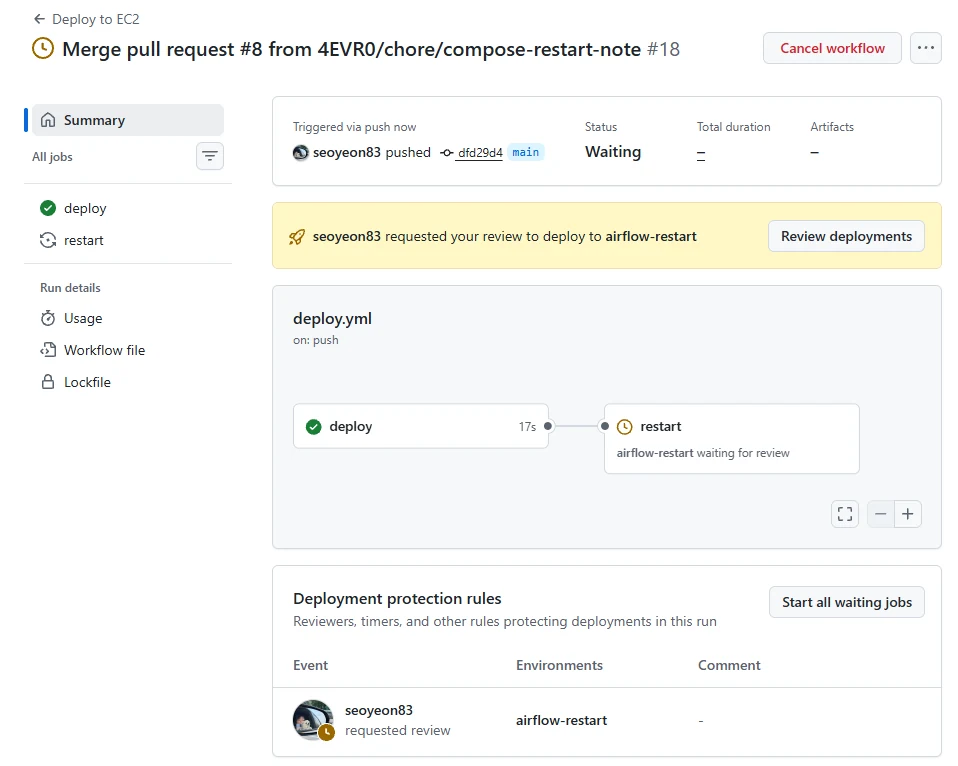
※ 최초 SSM 배포는 팀원이 구현했고, 결과 확인과 자동 반영, 승인 분리는 직접 설계했습니다.
03
통합 모니터링
사람이 보고 있지 않아도 증상이 드러나야 한다. 대시보드는 증상을 보이게, 알림은 보지 않을 때 알리게.
흩어진 5개 환경을 한 화면으로
수집 경로는 환경마다 달라도 라벨을 통일해, 지표에서 해당 작업의 로그까지 한 화면에서 이어 봅니다.
문제
- 실행 환경이 홈서버, EC2, GPU 클라우드, 웹 서버에 흩어져 실패를 알려면 사람이 직접 접속해야 했다
- DAG가 성공해도 결과가 틀릴 수 있다
무엇을 보이게 만들 것인가
| 질문 | 관측 대상 |
|---|---|
| 파이프라인이 도는가 | Airflow |
| 결과가 맞는가 | 데이터 정합성 |
| 서빙이 정상인가 | vLLM, 웹 서버 |
| 그래프가 채워지는가 | Neo4j |
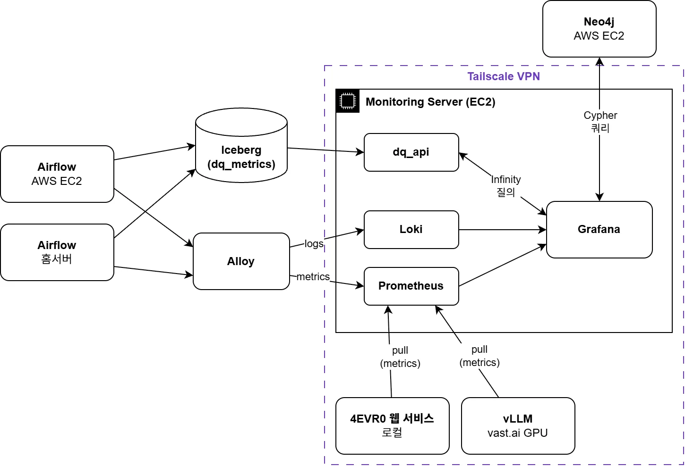
수집 경로 판단
- 홈서버는 다른 tailnet이라 push만 가능
- Airflow EC2는 태스크 로그를 파일로 읽어야 해서 로컬 에이전트(Grafana Alloy)로 push
- 웹과 vLLM은 자체 /metrics를 노출하므로 기존 pull 유지
경로는 달라도 라벨을 job · host · dag_id · task_id로 통일 → 패널에서 바로 해당 구간 Loki 로그로 이동
그 밖에 바꾼 것
- ARM(t4g) 한 대로 마이그레이션
- 끝난 실행만 보이던 StatsD를 보완하려 REST API exporter 추가
- 팀원 범위: 웹, vLLM의 pull 경로와 Neo4j 플러그인은 팀원 구성을 유지
Airflow 대시보드
끝난 실행의 통계만으로는 멈춘 파이프라인이 보이지 않는다 → 실행 중 상태와 직전 결과, 신선도를 따로 수집해 보이게 했습니다.
문제
- StatsD 지표는 끝난 실행의 통계라서 현재 어떤 DAG와 태스크가 얼마나 돌고 있는지, 직전 실행이 어떻게 끝났는지 알 수 없었음
- 메트릭이 비었을 때 "실행이 0건"인지 "수집이 끊긴 것"인지 구분할 수 없었음
- DAG 선택 변수가 완료 이력 기반이라, 한 번도 안 돈 수동 백필 DAG는 목록에 없음
처리
Airflow REST API를 조회하는 exporter로 패널 6개를 추가했습니다. 기존 StatsD 패널은 지우지 않고 "전체 부하와 추세" 역할로 남겼습니다.
| 추가한 패널 | 보이게 한 것 |
|---|---|
| 상태 수집 성공 여부 (②) | 관측 실패와 실행 0건의 구분. 메트릭이 비어도 원인이 둘 중 무엇인지 알 수 있어야 함 |
| 활성 DAG/태스크 수, 현재 대기/실행 경과 (①) | 어떤 작업이 얼마나 기다리고 돌았는지. 끝난 실행의 통계로는 지금 상태가 보이지 않음 |
| DAG별 직전 완료 결과와 신선도 (①) | 멈춘 파이프라인. 성공 여부만으로는 멈춤이 드러나지 않아, 완료 후 경과 시간으로 드러냄 |
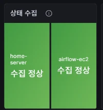
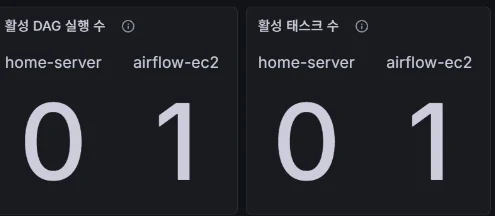
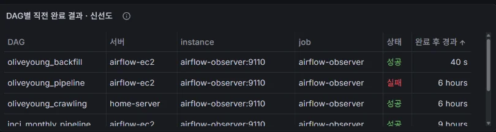
- 선택 변수 (③): 등록된 DAG를 선택 변수에 포함해 완료 이력이 없는 백필 DAG도 목록에 나오게 함
- 시각화 판단: 변수 캐스케이드
$host→$dag_id. 홈서버와 EC2가 서로 다른 DAG를 실행하므로 host를 먼저 골라야 무관한 DAG가 섞이지 않는다
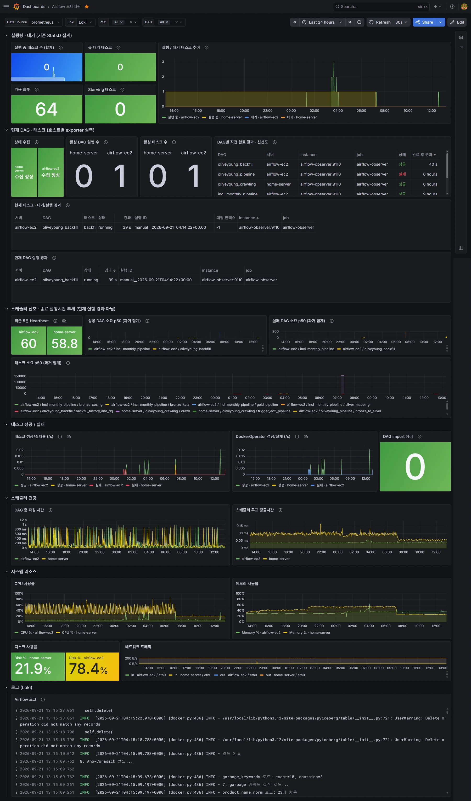
데이터 정합성 대시보드
결과가 맞는지, 얼마나 맞는지, 뭐가 틀렸는지를 점수판 → 게이트 → 추이 → 원시 행 순으로 좁혀 보는 대시보드입니다 (7월 11패널 → 10월 27패널).
지표 선정 근거 (위에서부터 화면 순서)
- 최신 DQ 기록 4종 (매핑률, 오류 비중, 카테고리 실패, 카테고리 0건): 알람이 울렸을 때 "왜"를 보는 첫 화면. 단계별 최신 값을 먼저 보고 좁혀 들어가는 구조의 시작점
- 게이트 판정, 연속 누락, 부분 수집 입력: 전처리를 진행할지, 경고할지, 멈출지 판단. 연속 누락 수가 곧 데이터 나이 9일 SLO 위반 수
- 크롤 수집률 (수집 수 / 기대 URL 수): 카테고리는 "완료"인데 상품이 일부 빠지는 경우를 숫자로 드러냄
- 매핑률과 unmatched 건수: 보강이 필요한 규모. unique 성분 대비 매칭 성공/실패 건수를 함께 표시
- 입력/정제/오류 레코드 (계산값): 단계별 건수 규모. 정상+오류=입력이 성립하지 않아 보존식이 아닌 참고용 계산값으로 표기
지표를 믿고 읽을 수 있게 한 설계
- 오류율 → "오류 레코드 비중(참고)": 41%가 상품 실패율로 읽히지 않도록 패널 이름과 설명을 실제 의미에 맞게 바꿈
- 정상/백필 stage 분리, 추이 x축을 batch_date로 두고 백필은 점선: 오늘 돌린 8월 백필이 "최신 정상 실행"으로 읽히지 않고 8월 위치에 찍힘
- 집계 완전성 판정: 유형별 합계와 전체 오류 수가 다르면 "집계 불완전"으로 표시. 운영 백필 7건 모두 일치 확인
- 입력 품질 게이트 행: 판정과 사유 수치 옆에 게이트 로그(Loki)를 붙여 "몇 개"와 "어느 카테고리"를 한 화면에
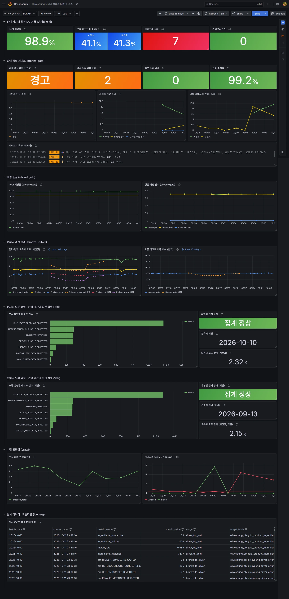
구조 변경: 로그 파싱에서 테이블로 (1세대 → 2세대)
처음엔 파이프라인 로그의 DQ 값을 LogQL로 파싱했지만, 크롤 호스트가 바뀌면 host 라벨이 갈려 같은 지표가 두 줄로 쪼개지고 배치의 정확한 값까지 내려갈 수 없었습니다. → 품질 지표를 Iceberg 테이블(dq_metrics)로 적재하고 FastAPI + DuckDB로 서빙해, run당 한 행으로 식별하고 원시 행까지 드릴다운합니다.
# 1세대: 로그 파싱 (host가 바뀌면 시계열이 둘로 갈림)
last_over_time({job="airflow", task_id="crawl"} |= `"DQ"`
| regexp `...` | label_format filename=""
| unwrap products_total [29d])
# 2세대: 테이블 + API (batch_date, run_id로 한 행)
GET /dq/latest?stage=crawl&metric=products_totalDiscord 알림과 파이프라인 리포트
대시보드를 계속 볼 수는 없다 → 이상은 알림으로, 결과는 리포트로 받고, 임계치는 평상시 실측값에서 정했습니다.
알림 규칙 20개: 파이프라인과 인프라 14종 + 베타 웹 6종
| 데이터 | 크롤 신선도, 전처리 지연, 매칭률 급락, 오류율 상승, 크롤 품질 경고, 전처리 보류 |
| 파이프라인 | DAG 실패, 스케줄러 다운, 크롤 장기 실행, 관측 수집 실패 |
| 인프라 | 서버 디스크 85% / 93%, 서버 메모리 90%, 노드 끊김 (Airflow EC2, 홈서버, 베타 앱) |
베타 웹 6종은 베타 서비스 관측에서 다룹니다.
임계치 근거
| 알림 | 임계 | 평상시 실측 | 이유 |
|---|---|---|---|
| 크롤 신선도 | > 120h | 완료 간격 최대 95h | 정상 최대 간격 약 96h에 하루(24h) 여유. 기존 96h는 너무 빠듯했음 |
| 크롤 장기 실행 | > 60h | 정상 최대 약 48h | 멈춤을 신선도(120h)보다 하루 반 먼저 감지 |
| 매칭률 급락 | < 0.95 | 약 0.991 (0.990~0.992) | 평상시 변동이 매우 작아 붕괴 수준의 하락만 잡음 |
| 전처리 오류율 | > 0.7 | 약 0.41 (0.401~0.418) | 평상시 매우 안정적이라 정상선을 크게 넘을 때만 잡음 |
| 크롤 품질 경고, 전처리 보류 | 게이트 판정이 경고, 보류 | – | 판정은 입력 품질 게이트 한 곳에서 하고 알림은 결과만 읽음. 보류는 critical |
| 노드 메트릭 끊김 | 5분간 부재 | – | 기존 식은 15분 넘게 꺼지면 저절로 해소됨. 호스트를 고정한 absent_over_time으로 수정 |
| DAG 실패 | 10분 내 실패 1건 이상 (2분 지속) | – | 실패 1건이면 알림. 2분 지속 조건은 재기동 직후 카운터 리셋으로 생기는 가짜 알림을 거르기 위함 |
| 스케줄러 다운 | 5분간 heartbeat 증가 없음 (5분 지속) | – | 5분간 heartbeat가 0건이면 다운으로 판단. 지속 시간은 스크랩이 잠깐 빠져도 흔들리지 않게. 시리즈가 사라지는 것 자체가 다운이라 "데이터 없음"도 알림으로 처리 |
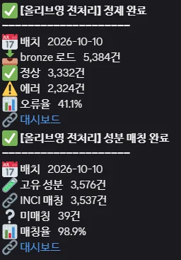
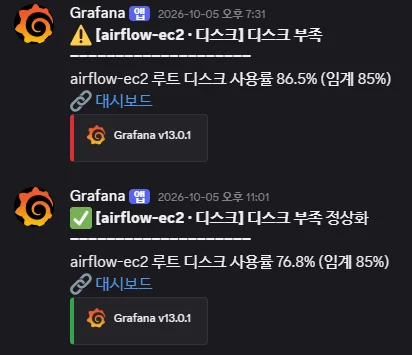
문제 해결과 재조정 사례
- 디스크 부족 알림 → 이미지 정리로도 부족해 EBS를 40GB로 증설
- 수집 상품 수가 고정값(1500) 미만이면 울리던 알림은 9월 정상치(3,061~5,126)와 안 맞아 삭제하고, 게이트 판정으로 대체
- 알림 룰은 머지하면 운영에 자동 반영
04 · 종료 후 운영 개선 (2026.09 – 10)
크롤 DQ 오탐에서 입력 품질 게이트까지
종료 후 SRE 스터디를 계기로 관측과 알림을 다시 점검했습니다. 정규 활동이 끝난 뒤에도 파이프라인을 운영하며 발견한 문제를 원인부터 다시 짚고, 측정·판정·알림·복구·재실행 경로를 고쳤습니다.
크롤 DQ 오탐 알림: 원인 좁히기
이미 끝난 크롤의 알림이 4시간마다 반복 → 측정, 기록, 알림 전달, 하류 네 층위로 나눠 원인을 확인했습니다.
증상 (2026.09)
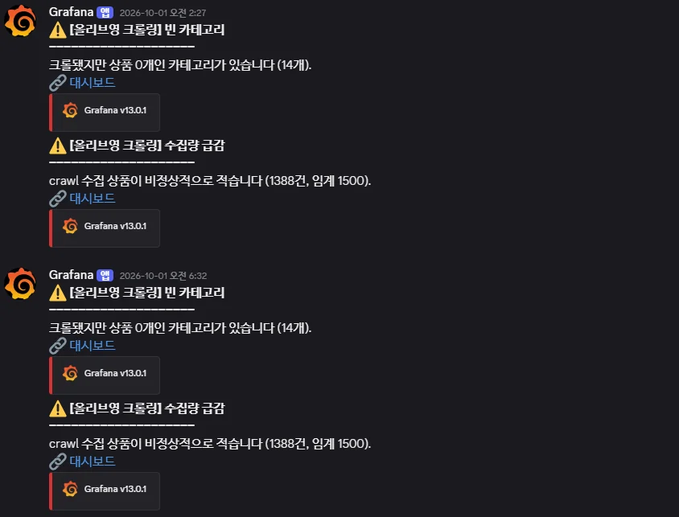
원인 (크롤 로그, S3 manifest 24개 재계산, DQ 30일 행으로 확인)
| 층위 | 원인 | 근거 |
|---|---|---|
| 측정 | 재개된 실행이 DQ를 이번 시도분만 집계. Timeout 등 일반 예외는 실패 수에서 빠짐 | products_total = 프로세스 내부 카운트, manifest는 run 누적 |
| 수집 기록 | URL 20개 묶음마다 카테고리를 '완료'로 기록 → 재개 시 반쯤 모은 카테고리를 건너뜀 | flush_subcategory()가 호출마다 completed에 추가 |
| 알림 전달 | 기간 제한 없이 최신 1행을 조회 + 4시간 재알림. 고정 임계 1,500은 현재 정상치(3,061 ~ 5,126)와 맞지 않음 | rules.yaml, notification-policy.yaml |
| 하류 | 카테고리마다 최신 run을 그대로 선택 → 반쪽 데이터가 경고 없이 서비스 데이터가 됨 | 9/25 에센스 258건 (평소 ~859건) |
진짜 위험은 '적게 모인 것'이 아니라 '반쯤 모인 카테고리'가 하류로 들어가는 것.
통째로 빠진 카테고리는 이전 run 데이터로 채워지지만, 반쯤 모인 카테고리는 최신 run으로 선택되어 빠진 상품이 사라진 상품으로 처리된다.
※ 수집(크롤러)은 팀원 담당. 사이트를 다루는 수집 로직은 그대로 두고, 결과를 기록하고 집계하는 부분만 수정했습니다.
DQ 해결 (1): 측정 → 게이트 → 알림 순서로 고치기
측정이 틀린 채로 판정을 만들면 정상 배치는 막고 손실 배치는 통과시킵니다.
- 측정 바로잡기 · 크롤러 기록, 집계
- DQ를 manifest 기준(run 누적)으로 계산
- 카테고리 '완료'는 끝까지 수집했을 때만 기록
- 모든 예외를 실패로 기록하고 사유 보존
- 같은 날짜 중복 실행 차단 (
max_active_runs=1, manifest 소유 dagRun 확인) - 수집 로직은 팀원 담당이라 그대로 두고 기록과 집계만 수정
- 입력 품질 게이트 · 전처리 맨 앞
- bronze 로드 직전, 실제로 읽을 파일 목록으로 판정 (별도 태스크면 판정과 로드 사이에 입력이 바뀜)
- 자동 트리거와 수동 실행 모두 같은 게이트 통과
- 판정 기준은 게이트 코드 한 곳에만
- AI는 크롤 DAG 끝을 제안했지만, 수동 실행이 검사를 건너뛰는 경로가 있어 기각
- 알림 재설계 · Grafana
- 배치 품질 알림은 기록 1건당 1번 (created_at 라벨, 해소 알림 끔)
- 오탐 룰 2종 삭제 → 게이트 판정 알림으로 교체
- 크롤 장기 실행(60h), 관측 수집 실패 알림 추가
| 이전 | 이후 | |
|---|---|---|
| 크롤 품질 판정 | 수집량 < 1,500, 빈 카테고리 > 0 (그것도 틀린 숫자로) | 부분 수집, 연속 누락, 한 번에 다수 누락 기준 |
| 알림 반복 | 끝난 배치 알림이 4시간마다 반복, 어느 배치인지 없음 | 배치당 1번, 배치 날짜 포함 |
| 크롤 멈춤 | 끝나야 보임 (최악이면 4일 뒤 신선도 알림) | 60시간 넘으면 알림 |
| 9/22 같은 손실이 다시 일어난다면 | 실패 0으로 기록, 알림 없음 | 실패 7로 기록, 경고 1번 |
배포 후 확인 (10/7): 같은 날짜 차단 동작, 리포트에 시도 횟수 표시, '스킨케어/크림 3회 연속 누락' 경고 1번만 발송, 전처리 지연 오탐 없음
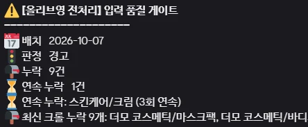
DQ 해결 (2): 카테고리 단위로 믿을 데이터 고르기
크롤러는 배포 일정상 고칠 수 없었다 → 데이터를 받아 쓰는 쪽에서 카테고리 단위로 고릅니다.
문제
게이트의 '보류'는 입력 전체를 멈춥니다. 반쪽 카테고리 1개 때문에 나머지 18개 갱신도 멈추고, 그 카테고리가 다음 크롤에서 통째로 빠지면 같은 반쪽 데이터가 계속 골라져 보류가 끝나지 않습니다. 백필은 입력을 고르는 방식이 달라 백필한 날짜만 카테고리가 빠졌습니다.
검토한 선택지
| 선택지 | 판단 |
|---|---|
| 부분 수집 폴더를 S3에서 수동 삭제 후 재실행 | 기각: 되돌릴 수 없고, 기록이 남지 않음 |
| 정상 전처리만 자동 대체, 백필은 제외 | 기각: 백필 날짜의 의미가 계속 달라짐 |
정상과 백필이 같은 규칙 select_inputs(as_of) 공유 | 채택 |
규칙
카테고리마다 as_of 이전 run 최대 6개를 최신부터 검사합니다. manifest가 없거나, 완료 표시가 없거나(부분 수집), 상품 수가 이전 run 중앙값의 50% 미만이면 버립니다.
| 상태 | 뜻 | 정상 전처리 | 백필 |
|---|---|---|---|
| fresh | 최신 run 데이터 사용 | 통과 | 사용 |
| stale | 최신 run에 통째로 없음 → 이전 run | 3회 연속이면 경고 | 이전 run으로 채움 |
| substituted | 최신 run을 버리고 이전 run | 경고 | 대체, 리포트 표시 |
| unresolved | 6개 모두 탈락 | 보류 | 그 카테고리 제외 |
검증 (머지 전, 실데이터 과거 재생)
첫 운영 적용 (10/11, batch 10/10): 정상 완료. silver 3,332행 전부 source_run_id 기록 → 한 배치에 크롤 run 4개가 섞인 것이 행 단위로 처음 보이게 됨. 대체 경로는 아직 실운영에서 발동되지 않음.
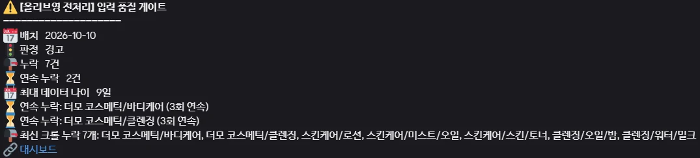
운영 데이터 복구를 위한 Backfill 설계
과거 Bronze 데이터를 정상 파이프라인과 분리해 안전하게 재처리하는 수동 복구 경로입니다.
문제
프로젝트 종료 후 전처리 서버가 중단된 기간 동안 크롤링 데이터는 S3에 계속 적재됐지만 후속 전처리는 수행되지 않아 데이터 공백이 생겼습니다. 정상 최신 데이터를 훼손하지 않고, 과거 누락 배치만 선택적으로 복구할 경로가 필요했습니다.
설계 의사결정
- 정상 파이프라인과 분리: silver_history와 백필 전용 DQ만 기록하고, silver_current와 gold / CDC / Neo4j는 제외
- source_run_id 기반 재처리: 날짜 추론 대신 실제 크롤 실행 단위로 입력을 식별해 특정 과거 배치만 선택적으로 복구
- manifest 게이트를 완료 여부에서 무결성으로: 이 크롤은 최근 10회 모두 interrupted. 완료 여부로 막으면 모든 백필이 예외 승인을 요구해 승인이 형식이 됨 → S3 파일과 manifest의 대응, run별 행 수 일치를 검사
- 정상 / backfill DQ 분리:
bronze_to_silver_backfillstage로 기록해 정상 운영 지표와 backfill 지표가 섞이지 않도록 설계
안전장치
- dry-run과 실제 실행(apply) 분리
- 백필 키 범위만 조건부 교체 (같은 날짜의 정상 데이터와 충돌하면 거부)
- 쓰기 후 재조회 검증을 통과해야만 완료 리포트 전송
운영 적용
- 8~9월 배치 7개: 입력 25,830건 → history 17,020행, 7건 모두 유형별 합계 일치
- 같은 키를 두 번 apply해도 2,254행 한 벌만 남음 (중복 없이 교체)
- 이후: 같은 교체 방식을 정상 파이프라인 전체로 확장 → 재실행 멱등화
재실행 멱등화: 백필 패턴을 정상 파이프라인으로
실패한 태스크를 다시 돌려도 결과가 같도록 설계하고, 운영 재실행 2회와 다음 정상 배치로 확인했습니다.
위 백필(과거 누락 배치를 정상 경로와 분리해 재처리하는 수동 복구 경로: dry-run과 apply 분리, 조건부 교체)의 패턴을 정상 파이프라인으로 넓혔습니다.
문제
실패한 태스크를 Clear 후 재실행하면 silver_history, dq_metrics, gold 테이블이 append라 같은 배치가 두 벌 쌓입니다. 운영 DQ를 조회해 보니 같은 batch_date로 2회 이상 돈 정상 실행이 전처리 DAG의 두 단계(bronze_to_silver, silver_to_gold)에서 각각 4개 날짜씩 있었습니다.
설계
| 설계 | 이유 |
|---|---|
| 쓰기 순서 history → error → current(마지막) → 재조회 검증 → DQ | 하류 CDC가 history 스냅샷을 비교해 새 상품을 찾으므로, history부터 확정하고 서비스용 current는 마지막에 씀 |
| 실행 종류별 교체 범위: 정상은 같은 stage·batch_date의 다른 실행 행 교체, 백필은 고정 키 교체, 크롤은 append 유지 | 실행마다 "같은 결과"의 기준이 다름. 백필 행과, 한 실행이 나눠 쓴 요약·유형별 기록은 보존 |
| gold 단계도 같은 batch_date로 교체, DQ는 gold 쓰기 뒤로 | 쓰기가 실패했는데 품질 기록만 남아 정상처럼 보이는 일 방지 |
| history와 DQ의 실행 ID를 하나로 통일 | 몇 초 차이 나는 다른 값이라 같은 실행의 행을 정확히 찾아 교체할 수 없었음 |
| BATCH_DATE가 비면 즉시 실패 | 07-15 정제 뒤의 gold 단계가 07-16, 07-17로 기록된 날짜 오염 확인 → 교체 키가 엉뚱한 행을 지울 수 있음 |
| 재실행이면 Discord 리포트 제목에 (재실행) 표시 | 같은 배치의 리포트가 두 번 와도 사람이 구분할 수 있게 |
검증 (배포 후, 운영 데이터)
- 배포 직후 버그: 첫 정상 실행 전에 기준값을 조회하다 발견. 행에 찍힌 값(작업 이름)과 교체 키(실행 ID)가 달라 교체와 검증이 동작하지 않는 상태 → 실행 ID로 통일
- 계약 테스트: mock으로 가린 단위 테스트는 통과했음 → 실제 행 값으로 교체와 검증을 확인하는 테스트를 추가하고, 수정 전 코드에서 실패하는지 확인
- 독립 리뷰: 다른 AI에 검토를 맡겨 지적 반영 (0건 쓰기 전 중단, 정상 실행 중 백필 apply 거부 등)
- 10-19 배치 (새 코드의 첫 자연 실행): (재실행) 표시 없음, 단계별 DQ 1 run, history 3,357행과 gold(frequency 900행, change_log 4행) 한 벌, 10-16 행 보존
운영 재실행 (10/17, 10-16 배치 정제 단계만 2회)
| 항목 | 재실행 전 | 1차 | 2차 |
|---|---|---|---|
| 10-16 history 행 | 3,348 | 3,348 | 3,348 |
| history 전체 행 | – | 282,693 | 282,693 |
| DQ 실행 수 | 1 | 1 | 1 |
| history 스냅샷 | 101 | 103 | 105 |
교훈: mock으로 가린 단위 테스트는 데이터 계약을 검증하지 못한다. 배포 직후 운영 기준값부터 재고, 실제 행에 찍히는 값으로 확인한다.
05 · 베타 운영 (2026.11)
베타 서비스 관측: 트래픽이 거의 없는 서비스의 알림 설계
저트래픽이라 에러율 대신 상시 확인과 사건 수로 설계해, GPU 정지 3회를 모두 3분 만에 감지했습니다.
역할: 앱 개발, 배포, GPU 서버 운영은 팀원 담당. 관측 연결, 알림 설계, 대시보드 보완을 맡음
문제
- 하루 수십 건 트래픽이라 에러율 같은 비율 알림은 의미가 없음
- 스트리밍(SSE) 추천은 실패해도 HTTP 200에
event: error로 응답 → 5xx 알림으로는 못 잡는다. 설계 리뷰 중 앱 코드에서 확인하고, 앱이 내보내던 추천 결과 메트릭으로 "추천 실패" 알림을 추가 - GPU가 꺼지면 앱이 템플릿 응답으로 넘어가 요청은 "성공"으로 기록 → 상시 확인(
/ready)만 이 상황을 잡았다
설계 원칙
- 상시 확인: 요청이 없어도 장애를 잡도록 내부
/ready와 외부 HTTPS를 1분마다 호출 - 사건 수: 실제 요청은 비율 대신 "1건이라도 생기면" 알림
- for 시간: 배포 재시작 같은 짧은 끊김은 흡수
알림 6종 (위 3개 critical, 아래 3개 warning)
| 알림 | 기준 | 원칙 |
|---|---|---|
| 웹 서비스 준비 실패 | /ready 실패 3분 (DB, Redis, Neo4j, GPU 중 하나) | 상시 확인 |
| 웹 외부 접속 실패 | 공개 도메인 HTTPS 실패 3분 | 상시 확인 |
| 웹 앱 다운 | 앱 메트릭 수집 실패 2분 | for 시간 |
| 웹 5xx | 10분 내 1건 이상 | 사건 수 |
| 추천 실패 | 10분 내 1건 이상 | 사건 수 |
| 인증서 만료 임박 | 14일 미만 | 만료 기한 |
관측 구조: 앱 밖으로 분리
처음에는 앱 compose에 수집기(Alloy)를 넣었지만, 운영은 ECR 이미지와 릴리스별 compose 묶음으로 배포되고 있어 설정이 반영될 경로가 없었습니다. 관측을 별도 에이전트 스택으로 분리해 앱의 Docker 네트워크에서 /metrics와 컨테이너 로그를 읽고 Tailscale로 push → 팀원의 앱 레포는 건드리지 않고, 보안그룹에 새 포트도 열지 않았습니다.
결과
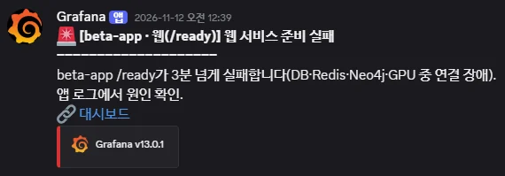
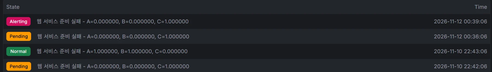
운영 전 (11/4): 팀의 보안그룹 정리로 모니터링 경로가 끊긴 것을 알림이 6분 만에 감지
한계: 의도된 정지와 장애를 구분하지 못해 GPU를 끌 때마다 수동으로 silence를 걸었다 → 유지보수 모드 신호가 필요